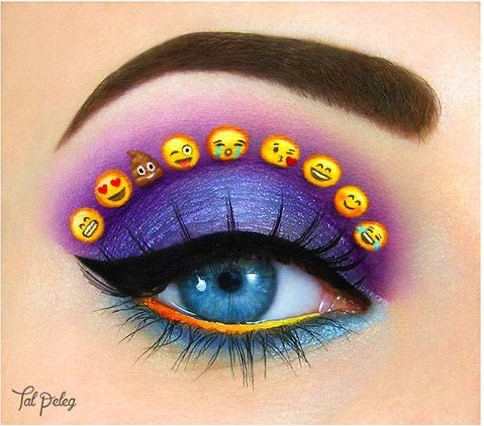

If you'd like to contribute a story, essay, note, idea, what have you, for consideration: send an email to mediaqueeries+submit@gmail.com.
I've spent a long time looking. I've chased down narratives of queer folks in tech, of kick-ass trans language developers, of lesbian web programmers whose brilliance shines every time they give a conference talk, of the unfortunate stories of gay men whose CEO's crack jokes about being gay. Then there's the trauma that the tech industry itself perpetuates on folks in various LGBTQ communities. The ignorance of products to women's and trans and non-binary health, the displacement of trans homeless youth, the massive conference expenditures and six figure salaries in the face of gentrifying queer communities in San Francisco, Austin, Portland, Seattle, New York, and on, and on, and on.
Some of these stories aren't exclusive to the tech world, but I'm trying to point to a glaring questions I so rarely see answered in tech, the first of which is: where are the LGBTQ people?
At first glance, one might say queer narratives are so rare because there are so few queer people to begin with. Okay, sure, but without even getting into the statistics, an average representation of 0% is certainly nowhere near parity with the reality — there are queer people in tech, somewhere. We need more inclusion across all spectrums of diversity, in this and other industries, but there's usually only blank stares when someone does ask about LGBTQ inclusion; that the statistics don't exist, that no one's thought about it before. I've had to look through webs of Twitter followers and their mentions, through related Tumblr blogs, through the occasional blog post to find, maybe, a few dozen narratives about being queer in tech. From the outside looking in, you might think there's almost no space for queer people in tech. And you might be right; on average, you're probably more likely to encounter rigidly binary notions of gender because "it's easier to program" into a database, to be immersed in hyper-sexualized, heteronormative, male dominated workplace cultures, and the daily conflation of sex, gender, and sexuality in our product design.
I've spent a long time looking for queer voices in tech and I'm tired of waiting for it to get better. Let's write about making queer apps. Let's write about breaking binary systems in products (gender and otherwise). Let's talk about how assuming static identities traps us into a name, a gender, or a pronoun. Let's talk about the problems the tech industry simply hasn't solved for LGBTQ communities, how we can start building solutions for ourselves, and how allies might help (and when allies need to take a hint, sit down and support queer folk). I'm sure there are queer issues in tech I haven't even thought of yet! If you have a queer tech story to tell, I'd love to hear it. The dream I keep having is for a queer kid, like myself a few years ago, to be able to—someday—wonder what it means to be queer and to build things in this industry, and be able to know. To know that we are smart, and confident, and strong. To know that we exist and we have voices of our own. Let's write these stories down; something is bound to come of it.
If you'd like to contribute a story, essay, note, idea, what have you, for consideration: send an email to mediaqueeries+submit@gmail.com.
Makeup image credit Tal Peleg